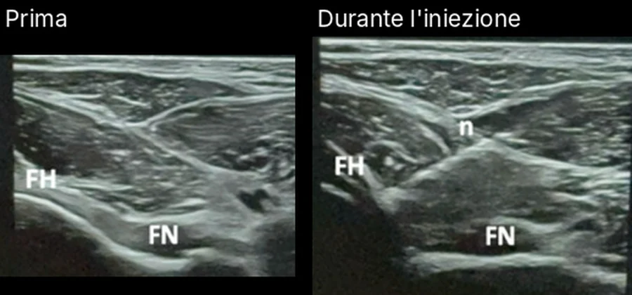

L'infiltrazione dell'anca consiste nell'iniettare un farmaco dentro l'articolazione. Può servire a ridurre il dolore, di solito con un cortisonico, oppure a capire da dove il dolore nasce davvero, con un anestetico locale.
L'anca è profonda e vicina al fascio di nervi e vasi della coscia: per questo non si infiltra alla cieca, ma guardando l'ago con l'ecografo.

Quando si propone
L'indicazione più frequente è il dolore da artrosi dell'anca che non si controlla con il movimento regolare, il calo di peso quando serve e i farmaci per bocca. Si usa anche nelle artriti infiammatorie e in alcune sofferenze del labbro acetabolare.
C'è poi un impiego diverso, che vale la pena conoscere: l'infiltrazione a scopo diagnostico. Se iniettando un anestetico dentro l'articolazione il dolore scompare per qualche ora, quel dolore viene dall'anca; se non cambia nulla, viene da altrove — dalla schiena, dai tendini intorno, dalla parete addominale. È un'informazione che nessuna immagine può dare.
Perché serve l'ecografo
A differenza del ginocchio, l'anca non si raggiunge in sicurezza basandosi sui soli punti di repere: senza guida l'ago finisce dentro l'articolazione in una buona parte dei casi, ma non in tutti.[2] Con l'ecografia la riuscita è pressoché costante, e soprattutto si vedono il nervo e i vasi femorali e li si evita.[2][5]
Anche la radioscopia e la TC permettono di guidare l'ago, ma usano radiazioni e non mostrano i tessuti molli. L'ecografia non ne usa, si esegue in ambulatorio e mostra ciò che all'ago conviene non incontrare.[1]
Com'è la seduta
Si sta sdraiati sulla schiena, con la gamba leggermente ruotata verso l'esterno. Dopo la disinfezione, il medico appoggia la sonda sulla piega inguinale e segue l'ago sullo schermo fino al collo del femore. Si avverte la puntura e una sensazione di pressione mentre entra il liquido.
La procedura dura pochi minuti. Si resta seduti un quarto d'ora prima di uscire e si torna a casa senza accompagnatore, a meno che l'anestetico non renda la gamba temporaneamente meno sicura.
Dopo l'infiltrazione, fai
- Cammina normalmente già dal giorno stesso.
- Se l'infiltrazione era diagnostica, annota nelle ore successive quanto dolore è rimasto: è il dato che serve al medico.
- Se sei diabetico, controlla la glicemia per qualche giorno.
- Avvisa il medico in caso di febbre, o di dolore che peggiora dopo il secondo giorno.
Non fare
- Non programmare sforzi importanti o lunghe camminate nelle quarantotto ore successive.
- Non sospendere l'esercizio nelle settimane in cui il dolore è basso: è la finestra in cui serve di più.
- Non considerarla una cura dell'artrosi.
Quanto dura l'effetto
Nell'artrosi dell'anca il cortisone riduce il dolore e migliora la funzione nelle prime settimane in modo marcato, ma il vantaggio tende a esaurirsi entro tre mesi e oltre i sei non è più dimostrabile.[3] Confrontando fra loro i diversi farmaci iniettabili — cortisone, acido ialuronico, concentrati piastrinici — a distanza di mesi nessuno risulta chiaramente superiore agli altri.[4]
Questo definisce il ruolo della procedura: un aiuto a termine, da collocare dentro un programma che comprende esercizio e gestione del carico, non un trattamento da ripetere a calendario.
Sulla dose, la linea guida indica per l'anca una quantità di cortisonico contenuta, e in generale la dose efficace più bassa.[1]
Quando non si fa, e quando serve cautela
- Infezione in corso, locale o generale.
- Allergia nota al farmaco.
- Protesi d'anca già programmata a breve: il cortisone aumenta il rischio di infezione dopo l'intervento e l'infiltrazione va distanziata.[1]
Prima di infiltrare conviene avere una radiografia recente, per escludere condizioni che richiedono tutt'altra condotta — l'osteonecrosi della testa del femore o una frattura da insufficienza — e che possono dare un dolore identico a quello dell'artrosi.[1]
Richiedono valutazione individuale il diabete, la terapia anticoagulante e l'assunzione di farmaci come il ritonavir, che amplifica gli effetti del cortisone su tutto l'organismo.[1]
Effetti indesiderati
Con la guida ecografica le punture accidentali di vasi o del nervo femorale non sono riportate nelle casistiche.[1] I disturbi comuni sono il dolore nelle ore successive, un rialzo transitorio della glicemia e, occasionalmente, vampate al viso.[5]
Esiste però un rischio specifico dell'anca che va conosciuto prima di accettare la procedura: in una parte dei pazienti trattati con cortisone l'artrosi può progredire più rapidamente del previsto, e questo accade soprattutto quando l'articolazione è già molto compromessa in partenza.[3] Sono stati descritti, più raramente, osteonecrosi e fratture da insufficienza.[5]
È la ragione per cui l'infiltrazione dell'anca si propone con selezione, e non come gesto di routine.
Cosa è utile sapere prima
Risponde meglio chi ha infiammazione attiva. Quando l'ecografia mostra una sinovite, la probabilità che l'infiltrazione funzioni è più alta.[3]
Il risultato va messo in conto per quello che è: un periodo di dolore ridotto in cui si può muovere di più e rinforzare. Se quel periodo passa senza che nulla cambi nelle abitudini, al termine si torna al punto di partenza.
Non sostituisce la decisione sull'intervento. Nell'artrosi avanzata rinviare a oltranza con le infiltrazioni non migliora il risultato della protesi.
Da dove vengono queste informazioni
- Benzon HT, Provenzano DA, Nagpal A, et al. Use and safety of corticosteroid injections in joints and musculoskeletal soft tissue: guidelines from the American Society of Regional Anesthesia and Pain Medicine. Regional Anesthesia & Pain Medicine 2026;51(7):746–773. doi:10.1136/rapm-2024-105656
- Hoeber S, Aly AR, Ashworth N, Rajasekaran S. Ultrasound-guided hip joint injections are more accurate than landmark-guided injections: a systematic review and meta-analysis. British Journal of Sports Medicine 2016;50(7):392–396. doi:10.1136/bjsports-2014-094570
- Kelliher A, Beilharz SA, Sutton R. Efficacy of intra-articular corticosteroid injection for hip osteoarthritis: a systematic review with meta-analysis. The Journal of Arthroplasty 2026. doi:10.1016/j.arth.2026.07.024
- Liu C, Deng J, Abbas A, et al. Comparing the efficacy and safety of intra-articular injection treatments for hip osteoarthritis: a systematic review and network meta-analysis. Orthopaedic Journal of Sports Medicine 2026;14:23259671261419519. doi:10.1177/23259671261419519
- Hynes JP, Kavanagh EC. Complications in image-guided musculoskeletal injections. Skeletal Radiology 2022;51(11):2097–2104. doi:10.1007/s00256-022-04076-8
Scheda aggiornata il 16 novembre 2026. Prossima revisione prevista entro novembre 2028.
Per quali disturbi
Le schede dei disturbi per cui questo trattamento viene preso in considerazione, con quello che dicono le linee guida.
Cerca un'altra scheda
Un disturbo, un trattamento, o anche solo il punto che fa male: «formicolio», «tallone», «spalla congelata».